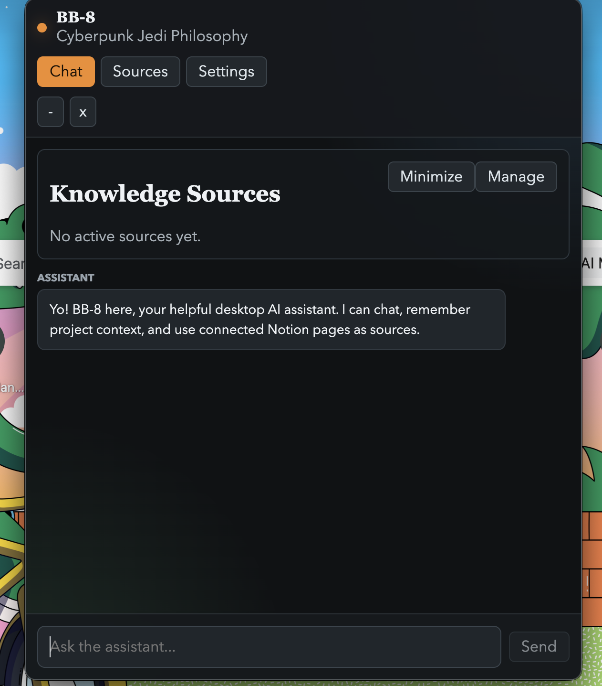

Meet BB-8.
An assistant with context.
And a little more capability.
A desktop AI companion that brings together conversation, persistent memory, local files, and Notion. Connected tools, with human approval built in.


MEMORY. TOOLS. HUMAN CONTROL.